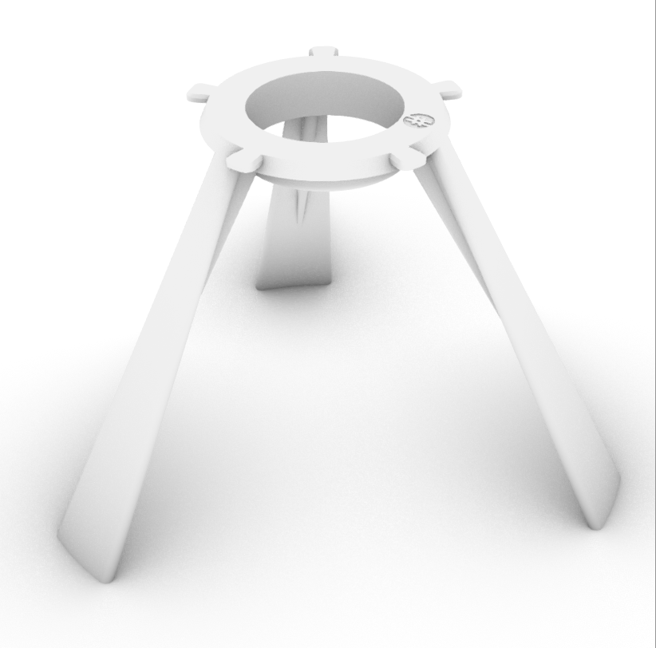
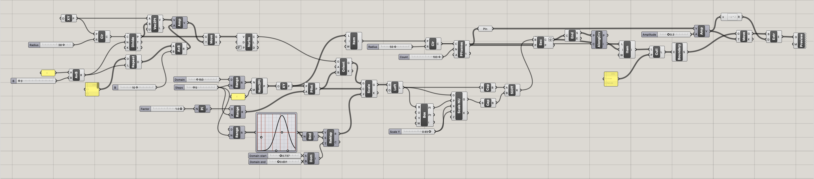
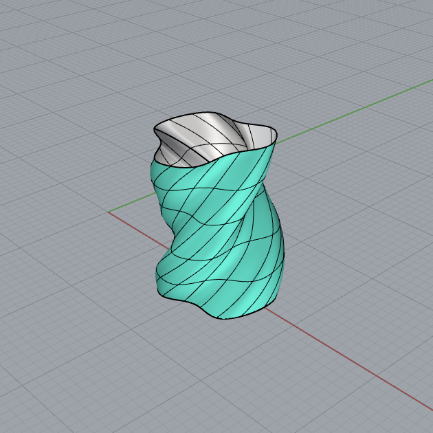
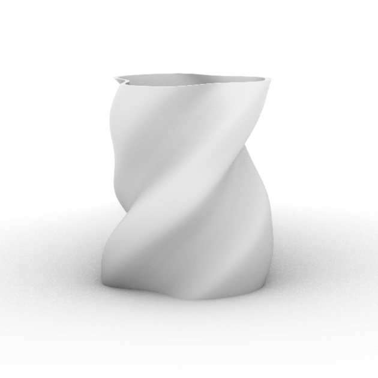
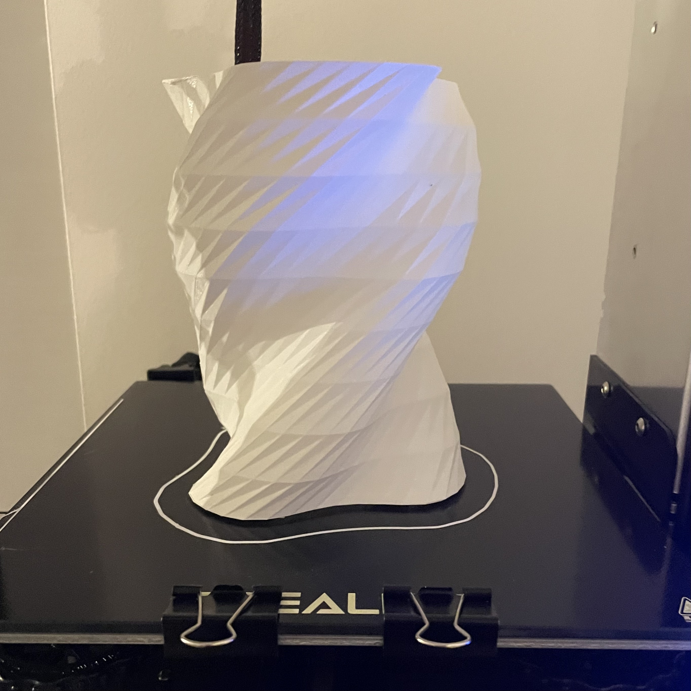
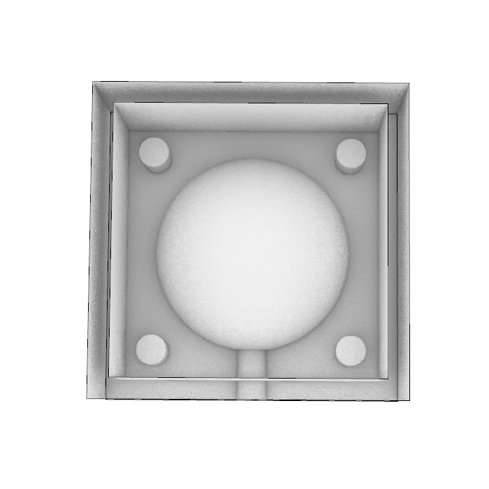

Last week, I had created my base mesh for my lamp and was experimenting with different shade patterns. This week, I fabricated and iterated several versions of my lamp stand to fit my bulb and lamp innards. I also utilized Grasshopper to achieve the spiralized and ridged pattern for my shade.
Stand
After first printing my stand, I found that the opening was too tight, which didn’t allow the pendant to sit balanced. After using Scale2D to make the diameter bigger by 2 mm, I found that the bulb sat too low this time, causing the bottom of the lamp innards to hit the ground. In this case, the lamp and stand were both unstable. I scaled the diameter back down by 1 mm which was the perfect fit.

Shade
After compiling several lamp ideas surrounding pleats, waves, and ridges, I decided to follow a Grasshopper tutorial that utilizes a Gaussian curve GraphMapper component to adjust the curve width of the lamp shade. The final baked component is actually a series of standalone pieces that are not connected. To ensure my lamp would print together as one single component, I baked the shade after completing the Solid Difference.

  
Molding & Casting
I used a sphere as my object to nail down the basics of designing the casting mold this week. I used MeshBooleanUnion to combine the sphere and the casting pipe, and MeshBooleanSplit to practice splitting the sphere from the box perimeter. One struggle I had was with closing the perimeter of the box. For next week, I plan on finishing up my mold design, casting Oomoo in the 3d printed mold, and then casting the hydrostone in the mold.
